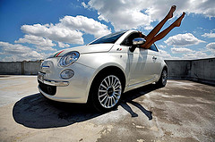
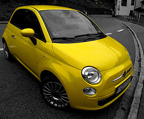
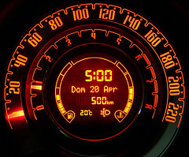

jQuery Plugin - LayerSlide demo
vertical sliding down

Fiat 500
©Blastblog
More...
horizontal sliding left
Fiat 500
Image 1
Image 2
More...
©neonfever
diagonal sliding bottomRight
riflessi escheriani
©delaque79
More...
vertical sliding partialLeft

Fiat 500
©JeanM1
More...
vertical sliding secondRaise

1°raduno club nuova fiat 500
©viper72
More...
diagonal sliding secondBottomRight
Hey Good Lookin'
©neonfever
More...
diagonal sliding secondBottomLeft
imgのalt属性を取得して表示しています。